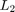

LPVNCFSYN - Parameter-dependent Glover-McFarlane loop-shaping for LPV systems
Contents
Syntax
[K,CL,GAM,INFO]=lpvncfsyn(G,W1,W2) [K,CL,GAM,INFO]=lpvncfsyn(G,W1,W2,'ref') [K,CL,GAM,INFO]=lpvncfsyn(G,W1,W2,Xb,Yb,...) [K,CL,GAM,INFO]=lpvncfsyn(G,...,OPT)
Description
[K,CL,GAM,INFO]=lpvncfsyn(G,W1,W2) synthesizes a parameter-dependent Glover-McFarlane loop-shaping controller K for the shaped plant Gs=W2*G*W1.
^ z1 ^ z2
____ | ____ | ____ ____
->| W2 |-> + ---->| Ks |--> + -->| W1 |--| G |---
+ | ---- ^ ---- ^ ---- ---- |
| | | |
| w1 | w2 | |
|__________________________________________________|G is a pss, while W1 and W2 can be pss, pmat or double. K is a parameter-varying controller which minimizes the induced  norm of the loop-shaping interconnection defined by G, W1 and W2. K is a pss defined on same domain as P. K has as many inputs as G has outputs, and as many outputs as G has inputs. GAM is the induced norm of the loop-shaping interconnection. CL is the system taking in [w1; w2] and outputting [z1; z2]. INFO is a structure containing data from the Linear Matrix Inequalities that are solved to obtain K. A call to lpvncfsyn without a basis function argument generates a controller assuming no bounds on the parameter rate of variation.
[K,CL,GAM,INFO]=lpvncfsyn(G,W1,W2,'ref') synthesizes a parameter-dependent Glover-McFarlane loop-shaping controller K for the shaped plant Gs=W2*G*W1, assuming a reference command. CL is the system taking in [w1; w2; ref] and outputting [z1; z2], and GAM is its induced norm.
^ z1 ^ z2
____ | ____ | ____ ____
----->| W2 |-> + ----->| |--> + -->| W1 |--| G |---
+ | ---- ^ | Ks } ^ ---- ---- |
| | --->| | | |
| w1 | ref ---- w2 | |
| |
|_______________________________________________________|[K,CL,GAM,INFO]=lpvncfsyn(G,W1,W2,Xb,Yb,...) computes the rate-bounded Glover-McFarlane loop-shaping controller K where the rate-bounds of the independent variables of the shaped plant Gs are incuded in the synthesis conditions. Xb and Yb are basis objects, which describe the assumed parameter dependence of the lyapunov matrices used in solving for K.
[K,CL,GAM,INFO]=lpvncfsyn(G,...,OPT) allows the user to pass in a lpvsynoptions object.